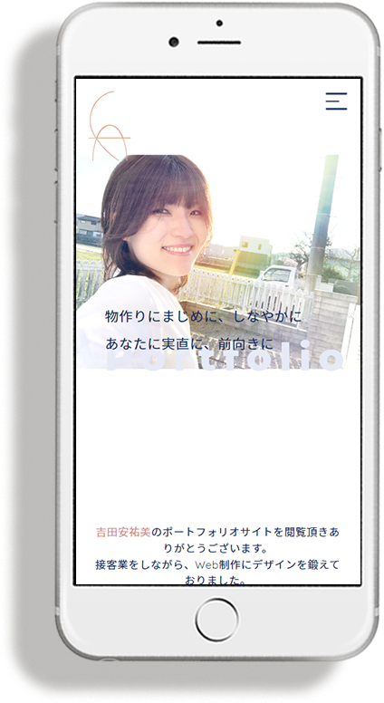
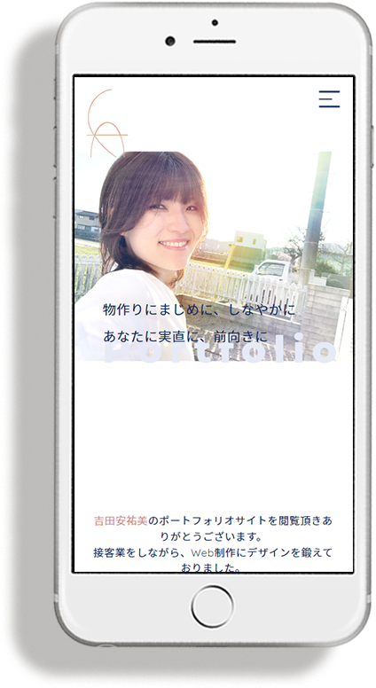

ポートフォリオサイト
私の作品
 

コンセプト
シンプルだけど、温かみも感じられる配色にしました。
使用ツールと言語

制作にあたっての考え
-
配色を決めるに当たって、自分の生年月日で決めました。
私は1995年1月17日産まれで、雪と阪神淡路大震災が浮かびました。ですが寒色や悲劇で終わらせたくなくて、 希望、温かみを感じるオレンジ色を入れたくて、pintrestで朝焼けのような雪景色の写真を、そこから色をとりました。
このサイトの色すべてその写真から取っています。 -
フォントの選定は、シンプル、シンプルを壊さない可愛さも入れたくて、日本語はNoto Sans Japanと游ゴシック、 英語はQuicksandと、見出しはインパクトも加えてMontserratにしました。
-
ぱっと見でレスポンシブ対応をしているかモックアップでスマホのファーストビューを載せ、表現しました。
-
8の倍数または4の倍数で余白、コンテンツを作成しました。
汎用的なスクリーンのサイズの基準に合わせやすい(例えばフルHD解像度の1920×1080pxは両方8の倍数である)ので、 あとから、作成したサイトのコンテンツの数や形が変わっても、このルールがあれば柔軟に対応しやすいそうです。 こちらの方の記事 を参考にしました。 -
写真は自分のサイトで目を引きたいので自分の写真を使用しています。またそれだけではなく、写真の向いている視線の方向(左は過去を、右は未来をイメージさせられる)を意識してセレクトしました。 こちらの方の記事 を参考にしました。
作った振り返り